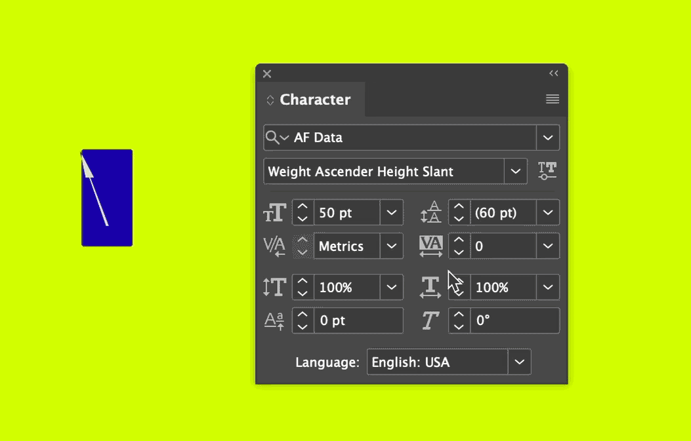
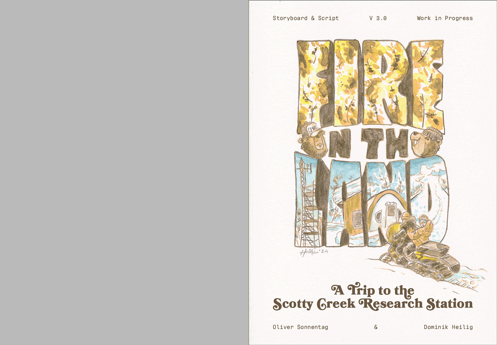

The research-team of Prof. Oliver Sonnentag (UdeM) reinstating the flux tower after it was destroyed by a severe late season wildfire in 2022.
March 2023, near the Scotty Creek Research Station, Northwest Territories, Canada.
Photo: Dominik Heilig (Aisu.Studio)
Varial Type Data Visualizer (Prototype 0.1)
Testing three axes (Width, Ascender and Slant) within the journalistic graphic novel
Project Fire on the Land.

Font axes adjustment in InDesign Paths and masters in glyphs.app.
Paths and masters in glyphs.app.
B
Fire-Impact
B
Growth
B
Permafrost Thaw
B
+4°C0°C-4°C
Global Temperature Deviation
WHBT'S NEXT

- Further font development
- Real scientific data mapping
- Custom CSV Upload
- Graphic Novel Exhibition at the Berlin Comic Invasion (April 28 - May 10)
Learn more on the Project Page